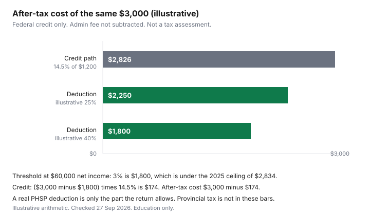

Healthcare · Canada
Health Spending Accounts for Self-Employed Canadians: How They Work and When They Beat the Tax Credit
A health spending account beats the medical expense tax credit for self-employed Canadians only when it is a private health services plan the CRA accepts. A sole proprietor with no arm’s-length employee does not qualify, but an incorporated business can. A health spending account is not a special receipt category. For tax purposes it has to be a private health services plan, usually shortened to PHSP. Employees who already have one through work should use the employer health spending account guide. This page is the self-employed question: when amounts paid into a plan can be deducted in the business, and when the same bills are only a medical expense tax credit. It is education, not tax advice. The notice of assessment governs.
Disclosure: Health spending account providers are an offer type. Saving Optimizer may later add partner links. We do not currently claim a provider partnership. Education only — not tax advice. No named providers and no ranking.
Key takeaways
- Folio S1-F1-C1 says a PHSP premium can be a medical expense, and that the same premium deducted under subsection 20.01(1) is not also claimed as a medical expense.
- CRA's 2019 tax tip says a sole proprietor with no arm's-length employee does not have an HSA that CRA treats as a PHSP. An incorporated business, including a corporation with one employee, can participate.
- The T2125 page allows a PHSP premium deduction only if you are actively engaged in the business and you meet an income test: more than half your income from the business, or $10,000 or less from other sources, in the year or the previous year.
- No administrator fee and no subsection 20.01 dollar cap were printed on the pages checked. Both are left out of the numbers below.
- The chart uses $3,000 of expenses and a $60,000 net income so the arithmetic can be redone. The 25 percent and 40 percent rates are illustrative. The 14.5 percent figure is the 2025 lowest federal rate.
What a health spending account is: a private health services plan (PHSP) under CRA rules
CRA's payroll page, Premiums and contributions to insurance plans, says a plan is a PHSP when the expenses it covers are medical and hospital expenses, expenses connected to a medical expense and incurred within a reasonable time, or a combination of those. It also applies an "all or substantially all" test, which the page says is generally 90 percent or more.
For an insured plan, that test looks at premiums paid in the calendar year. For a self-insured plan, including a plan made of health care spending accounts, it looks at benefits paid to employees in the year. Employee contributions, when they exist, are reported as code 85 on a T4 or code 135 on a T4A.
Guide RC4065, Medical Expenses 2025, uses the same 90 percent idea from the claimer's side: premiums paid to private health services plans can be a medical expense as long as 90 percent or more of the premiums paid under the plan are for eligible medical expenses. Folio paragraph 1.133 adds that the premium, contribution, or other consideration can include GST, PST, HST, and premium taxes, for the individual, a spouse or common-law partner, or a connected household member. Paragraph 1.135 is the stop rule: to the extent those amounts are deducted under subsection 20.01(1) in computing business income, they are not also deductible as a medical expense.
A marketed "health spending account" that fails the PHSP tests is not this deduction. The payroll page's examples of employee ceilings are about employer plans. They are not copied here as a self-employed limit. Workplace elections stay on the employer account guide.
Who can use one: sole proprietors, incorporated owners, and the arm's-length employee tests
CRA's 2019 tax tip, Warning: Buyer beware when it comes to Health Spending Accounts, draws a line the marketing often skips. Incorporated businesses, including a corporation with one employee, can participate.
An unincorporated business can cover the owner and employees when the owner has at least one arm's-length employee. If a sole proprietorship has no arm's-length employee, the tip says CRA does not consider the HSA a PHSP, and amounts paid to the account are not deductible business expenses. The tip also rejects the sales claim that buying an extra insurance policy makes a sole proprietor with no arm's-length employees compliant for an HSA.
An insured PHSP premium is a different path, and the T2125 page "Other business expenses" states its own tests. You can deduct the premium if you are actively engaged in the business on a regular and continuous basis, as an individual or as a partner, and the premium insures you, your spouse, or a household member. In the year or the previous year, either your net self-employment income, excluding losses and PHSP deductions, is more than 50 percent of your total income, or your income from sources other than self-employment is $10,000 or less. You cannot deduct the amount if someone else deducted it, or if it is claimed as a medical expense. The contract has to be with an insurance company, a trust company, a person or partnership in the business of administering PHSPs, a tax-exempt trade union of which you or the majority of employees are members, or a tax-exempt business or professional organization of which you are a member.
That page's definitions matter when someone asks whether a family member counts. Arm's-length employees are generally not related and not partners. Qualified employees are arm's-length, full-time, and have three months of service. Temporary or seasonal workers are not qualified employees. Insurable persons include qualified employees, people who would be qualified if they had three months of service, and people carrying on the business, including you and partners. A spouse on the payroll is not automatically arm's-length. Read the related-persons folio CRA points to before you treat a family hire as the employee who unlocks the plan. Disability coverage for the owner, which is income protection and not a PHSP, is the self-employed disability guide.
How the deduction works vs the medical expense tax credit
A deduction reduces the income that is taxed. The medical expense tax credit reduces tax, and only on the slice of eligible expenses above a hurdle.
Guide RC4065 prints that hurdle for 2025 as the lesser of $2,834 and 3 percent of line 23600. The medical expense tax credit guide is the list of bills. The spouse guide is who claims them when two people file. This page only compares the shape of the two reliefs.
Folio paragraph 1.135 is why you do not stack them. Premiums deducted under subsection 20.01(1) drop out of paragraph 118.2(2)(q). The credit remains available for eligible expenses that were not deducted in the business and were not reimbursed. A cost-sharing plan that leaves you with part of a dental bill is the gap insurance guide. Whatever is left unpaid can still be tested against the credit. It is not automatically a second deduction.
Subsection 20.01 also contains a dollar limit that depends on how the business is structured. That dollar figure is not printed on the T2125 page or the folio paragraphs, so it is not stated. Confirm the cap on the return for the year you file before you treat a large deposit as fully deductible.
Provider fees and the admin percentage to compare
Administrators charge for running the account. Some quote a flat fee.
Some quote a percentage of claims or of the amount deposited. No fee schedule from a provider is listed here, so this page prints neither a percentage nor a dollar fee. Ask for the charge in writing, in dollars for the year you are comparing, and subtract it yourself.
The sketch to use is: tax reduced is about the deductible amount times your marginal rate, and the net benefit is that tax reduction minus the admin fee. Marginal rate here means the combined federal and provincial rate that actually applies to the last dollar of business income. This page does not print a provincial rate, because no provincial form is listed here. If the admin fee is larger than the gap between the deduction's tax reduction and the credit's tax reduction, the account costs more than claiming the credit on the unreimbursed bills. A provider that will not state the fee in dollars has not given you the number the comparison needs.
Eligible expenses: same list as the medical expense tax credit
What the plan may reimburse is the medical expense list, not a private catalogue. Guide RC4065 and Folio S1-F1-C1 are that list: eligible services and items, and the premiums rule already quoted.
The payroll page's 90 percent test is how CRA decides the plan itself qualifies. A plan that pays a large share of costs that are not eligible medical expenses can fail "all or substantially all," and then the PHSP treatment does not apply. Read the plan's eligible list against the guide before you deposit a year of expenses.
Reimbursement changes the credit. An amount the plan pays you is generally not still sitting there to claim, unless it was included in income and not deducted elsewhere. That is the same reimbursement rule as on the medical-expense guide. Keep the administrator's statement, the receipt, and the note of what was deducted on the T2125. One pile of paper, one use of each dollar.
A worked comparison with arithmetic you can redo
The dollars in this section are chosen so the steps divide cleanly. They are not a receipt, not a CRA example, and not a quote of your tax.
Expenses are $3,000. Net income for the credit hurdle is $60,000. Three percent of $60,000 is $1,800. That is under the 2025 ceiling of $2,834 in Guide RC4065, so the hurdle is $1,800. Claimable amount is $3,000 minus $1,800, which is $1,200. The CRA page "Last year tax rates and income brackets (2025)" prints 14.5 percent as the lowest federal rate for 2025. Applying that rate to $1,200 gives a federal credit of $174. After-tax cost on the credit path is $3,000 minus $174, which is $2,826. Provincial credit is excluded. Say so when you redo this.
The deduction path assumes, for the sketch only, that the full $3,000 is deductible. At an illustrative marginal rate of 25 percent, tax reduced is $750 and the after-tax cost is $2,250, before any admin fee. At an illustrative 40 percent, tax reduced is $1,200 and the after-tax cost is $1,800, before any admin fee. Those two rates are labels for the arithmetic. They are not federal brackets. If subsection 20.01 caps the deduction below $3,000, replace $3,000 with the allowed amount and run the same multiplication. Then subtract the admin fee you were actually quoted.
| Path | What the illustration subtracts first | Tax reduced | After-tax cost of the $3,000 |
|---|---|---|---|
| Medical expense tax credit | 3% of $60,000 is $1,800, which is under $2,834, so $1,800. Claimable amount $1,200. | 14.5% of $1,200 is $174, federal only | $3,000 minus $174 is $2,826 |
| PHSP deduction at an illustrative 25% | No 3% hurdle in this sketch. The full $3,000 is treated as deductible. | $3,000 times 25% is $750 | $2,250, before any admin fee |
| PHSP deduction at an illustrative 40% | Same full $3,000, still only a sketch. | $3,000 times 40% is $1,200 | $1,800, before any admin fee |

Sources & date stamps
- Canada Revenue Agency, Income Tax Folio S1-F1-C1, Medical Expense Tax Credit, paragraphs 1.133 and 1.135. PHSP premiums, including sales taxes, and the bar on claiming them again when they are deducted under subsection 20.01(1). Chapter effective 15 Aug 2025. Checked 27 Sep 2026.
- Canada Revenue Agency, Guide RC4065, Medical Expenses 2025. Premiums to a private health services plan when 90 percent or more of the premiums are for eligible medical expenses. The $2,834 figure used in the hurdle. Checked 27 Sep 2026.
- Canada Revenue Agency, Premiums and contributions to insurance plans. PHSP conditions, the 90 percent test for insured and self-insured plans, and T4 code 85 / T4A code 135. Employee-plan examples on that page are not used as a self-employed cap. Checked 27 Sep 2026.
- Canada Revenue Agency, T2125, Other business expenses. Actively engaged test, the 50 percent income test, the $10,000 other-income test, who may be the contract party, and the arm's-length and three-month definitions. Checked 27 Sep 2026.
- Canada Revenue Agency, 2019 tax tip, Warning: Buyer beware when it comes to Health Spending Accounts. Incorporated businesses including a one-employee corporation; sole proprietors and the arm's-length employee test. Cited by its 2019 date.
- Canada Revenue Agency, Last year tax rates and income brackets (2025). Lowest federal rate 14.5 percent, used only on the credit path. Checked 27 Sep 2026.
- No provider fee schedule and no subsection 20.01 dollar cap were printed on the pages checked. Both are omitted.
Frequently asked questions
Can a sole proprietor have a health spending account?
A sole proprietor is not automatically eligible. CRA's 2019 tax tip, Warning: Buyer beware when it comes to Health Spending Accounts, says an unincorporated owner can use this kind of account with employees only when there is at least one arm's-length employee. With no arm's-length employee, CRA does not treat the account as a private health services plan, and amounts paid into it are not deductible business expenses. An insured-plan premium uses the separate tests on the T2125 business-expenses page.
Is an HSA better than the medical expense tax credit?
It can be, when the expense is allowed as a business deduction at your marginal rate and the credit would ignore everything under the 3 percent hurdle. In the illustration on this page, $3,000 of expenses at $60,000 of net income leaves a federal credit of $174 and an after-tax cost of $2,826. The same $3,000 treated as a full deduction is $2,250 after tax at an illustrative 25 percent rate and $1,800 at an illustrative 40 percent rate, before any admin fee. A real deduction may be capped, and that dollar cap was not on the pages checked, so redo the arithmetic on your return.
What fees do HSA providers charge?
No provider fee schedule is cited here, so no percentage and no flat fee is printed. Ask for the admin charge in dollars before you compare it with the credit. A useful sketch is the deductible amount times your marginal rate, minus that admin charge. If the charge is larger than the tax difference versus the credit, the account does not improve the after-tax cost on that sketch.
What expenses qualify?
Eligible costs follow the medical expense tax credit list in Guide RC4065 and Folio S1-F1-C1. Premiums paid to a private health services plan can themselves be a medical expense when 90 percent or more of the premiums are for eligible medical expenses. Folio paragraph 1.135 says premiums deducted under subsection 20.01(1) in computing business income are not also claimed under that medical-expense paragraph. Do not use the same dollar twice.
Do I need employees to have an HSA?
For a self-insured health spending account, the 2019 CRA tax tip says a sole proprietor needs at least one arm's-length employee. The same tip says an incorporated business, including a corporation with one employee, can participate. On the T2125 page, arm's-length generally means not related and not a partner, and a qualified employee is arm's-length, full-time, and past three months of service. Temporary or seasonal workers are not qualified employees on that page.
Researched and drafted with AI assistance and fact-checked against official Canadian sources. How we create content.